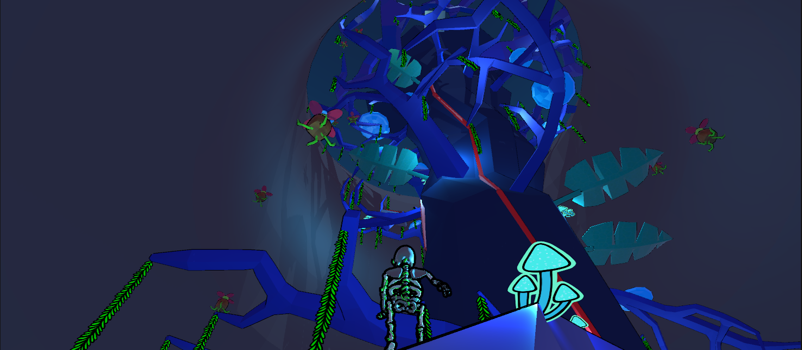

Something Valued
Timeframe: 20 weeks
Team Size: 10
I was the level and mechanics designer on a team of 10 for a 3D platforming game about a plant-covered skeleton exploring an abandoned nuclear power plant. I led design discussions in meetings about level designs and game mechanics. In the Unity engine, I created and managed prefab standards and file organization, and directed 3 others on working with Unity 3D developing environment and prefabs.
I also helped run regular playtests throughout the entire development period, as well as organized the feedback.